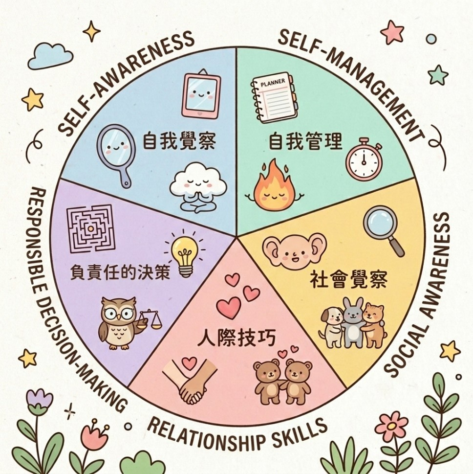

✦
✦
✦
十二月聖誕感恩活動，溫暖開跑寫下這一年最想感謝的人・事・物把感謝化作吊飾，掛上感恩聖誕樹點一顆吊飾，讀讀同仁的溫暖心意立即參加 →
十二月限定・聖誕感恩活動
這一年，謝謝你
在忙碌的值班與照護之間，總有人、有些事、有些小東西，默默撐住了我們。
寫下這一年你最想感謝的人、事、物，化作一顆吊飾，掛上我們的感恩聖誕樹。

感恩聖誕樹
樹上已掛著 0 份感謝，點一顆吊飾，讀讀大家的心意
WARMEST ・ 溫暖排行榜
收到最多溫暖的感謝，會掛在聖誕樹最頂端 ✦
點樹上的吊飾，就能在下方留言牆找到那則感謝
SEL 包子聖誕報佳音
點點看，每顆包子都有一句聖誕悄悄話
感謝留言牆
一起讀讀大家的感謝，喜歡就送一份溫暖 ♥（在文字上點兩下也可以）
🌱 Social-Emotional Learning
什麼是 SEL？
社會情緒學習是幫助我們認識自己、理解他人、做出負責任決定的學習方式， 讓醫療工作者在高壓環境中仍能保有溫度與穩定。

SEL 五大核心能力
✦
✦
✦
☕
先喘口氣
💛 給照顧者的溫柔
✦
🌿
從這裡開始，找到適合你的方式
四個入口，四種照顧自己的起點，選一個最想嘗試的開始吧。